3° Generacion
La Tercera Generación o Generación Avanzada se refiere a la saga videojuegos Pokémon Rubí y Zafiro y Pokémon Esmeralda para la consola Game Boy Advance; pero también se incluyen los videojuegos: Pokémon Pinball Rubí y Zafiro , Pokémon Mundo Misterioso: Equipo de rescate Rojo y Pokémon Rojo Fuego y Verde Hoja (remakes de la Primera Generación) de Game Boy Advance, Pokémon Ranger y Pokémon Mundo Misterioso: Equipo de rescate Azul de Nintendo DS; Pokémon Colosseum, Pokémon XD: Tempestad Oscura y Pokémon Box de Nintendo GameCube. Los principales juegos de esta generación y sus Pokémon son de la región Hoenn.
|


|
Novedades
Salió al mercado el 21 de Noviembre del 2002 en Japón, a pesar de ser una generación incompatible con las dos anteriores se masificó rápidamente, aumentando las ventas de la consola portátil Game Boy Advance. Incluía las siguientes novedades:
- Se añaden 135 nuevos Pokémon. Se pueden ver en esta lista.
- Gráficos totalmente rediseñados, hay efectos como ver tu reflejo en el agua, dejar pisadas/llantas de bici en la arena.
- Los iconos que tienen en el menú de equipo se parecen más al Pokémon.
- Se añade la crianza con objeto equipado. De esta forma aparecen 2 nuevas preevoluciones: Wynaut (Wobbuffet) y Azurill (Marill).
- Los Pokémon poseen naturaleza. Afecta las características de ataque, velocidad, etc. Existen 25 naturalezas: Tímido, Audaz, Huraño, etc. También influyen en el tipo de ataques que utilizará el Pokémon cuando lucha por sí mismo (sin las órdenes del entrenador).
- Aparece una nueva MO: buceo. Hay nuevos lugares dónde capturar Pokémon: bajo el agua, desierto, cráter con cenizas y hierba alta.
- Los Pokémon ahora poseen habilidades. Existen 77 en la tercera generación y afectan al combate.
- Los Pokémon pueden hacer contacto con el rival. Si el usuario utiliza un movimiento de contacto éste puede verse afectado por la habilidad del rival (ej: Elec. Estática/paraliza al contacto).
- Algunos movimientos ahora se clasifican como "de sonido", interactúa con las habilidades Insonorizar y Cacofonía.
- Aparecen nuevas bayas y la relación con lo nuevo: Pokécubos. Las bayas de la segunda generación cambian de nombre y desaparecen los bonguris.
- Se añaden nuevas Poké Balls y desaparecen las que se creaban mediante los bonguris.
- Aparecen los Concursos Pokémon (Pokémon Contest). Los ataques se subclasifican en Carisma, Belleza, Dulzura, Ingenio y Dureza.
- Se añade una evolución por belleza: Feebas a Milotic.
- Nuevas formas de Batallas: 2 Pokémon contra 2. Se añaden las Batallas de 2 entrenadores contra ti o con un aliado.
- Se introducen las Bases Secretas, pequeños escondites personalizables que se pueden abrir en zonas determinadas de la región. Además se puede acceder a las bases secretas de tus amigos y combatir con ellos si se ha utilizado la opción de compartir récords previamente.
- Se introducen las Bases Secretas, pequeños escondites personalizables que se pueden abrir en zonas determinadas de la región. Además se puede acceder a las bases secretas de tus amigos y combatir con ellos si se ha utilizado la opción de compartir récords previamente.
- 8 Nuevos Líderes de Gimnasio, incluyendo un combate doble.
- Dobles enemigos y una nueva historia: equipo Aqua y equipo Magma.
- Comunicación inalámbrica sin necesidad del Cable Link.
- Comunicación inalámbrica sin necesidad del Cable Link.
- Se agregan dos tipos de crecimiento: el errático y el fluctuante.
|

|
Pokémon iniciales
En Hoenn, las opciones para tu primer Pokémon se reduce a Treecko, Torchic y Mudkip, basándose en el triangulo de la ventaja y desventaja del tipo planta, el tipo fuego y el tipo agua.
| Treecko |
Torchic |
Mudkip |
 |
 |
 |
| Planta |
Fuego |
Agua |
Pokémon legendarios
Los pokémon legendarios introducidos en la tercera generación son Regirock, de Tipo roca, Regice, de Tipo hielo, Registeel, de Tipo acero, Latias y Latios, los Pokémon Eón, Kyogre, el mar y el océano, Groudon, el continente, Rayquaza, el rey del cielo, Jirachi, el Pokémon cumpledeseos y Deoxys, el alienígena. En Pokémon Esmeralda también es posible capturar a Lugia, Ho-Oh y a Mew. En Kanto, será posible capturar a Articuno, Moltres, Zapdos, Mewtwo, Raikou, Entei, Suicune, y al igual que en Esmeralda, Lugia, Ho-Oh y Deoxys.
| Regirock |
Regice |
Registeel |
Latias |
Latios |
 |
 |
 |
 |
 |
| Roca |
Hielo |
Acero |
Dragon / Psiquico |
Dragon / Psiquico |
| Kyogre |
Groudon |
Rayquaza |
Jirachi |
Deoxys |
 |
 |
 |
 |
 |
| Agua |
Tierra |
Dragon / Volador |
Acero / Psiquico |
Psiquico |
Líderes de gimnasio
Hay 8 líderes de gimnasio, que son aquellos que están especializados en cierto elemento de Pokémon y son los más fuertes de su ciudad:
Lider |
Tipo |
Lugar |
Medalla |
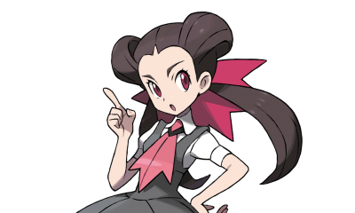Petra |
Roca |
Ciudad Férrica |

Medalla Piedra |
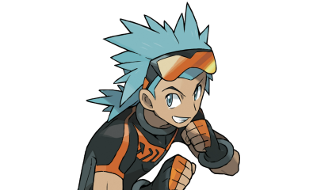Marcial |
Lucha |
Pueblo Azuliza |

Medalla Puño |
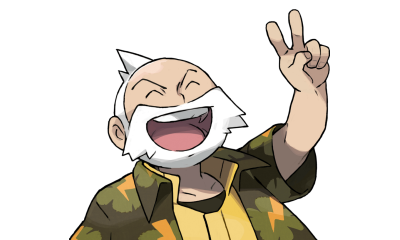Erico |
Electrico |
Ciudad Malvalona |

Medalla Dinamo |
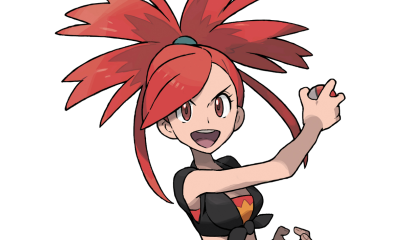Candela |
Fuego |
Pueblo Lavacalda |

Medalla Calor |
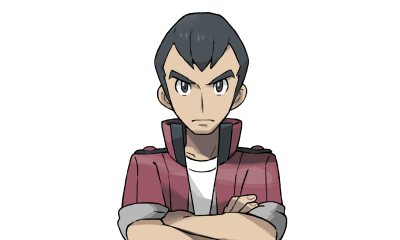Norman |
Normal |
Ciudad Petalia |

Medalla Equilibrio |
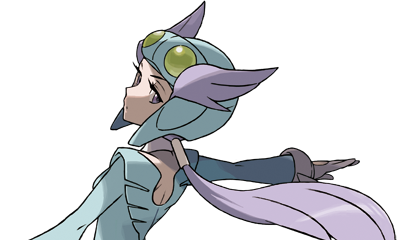Alana |
Volador |
Ciudad Arborada |

Medalla Pluma |

Vito y Leti |
Psiquico |
Ciudad Algaria |

Medalla Mente |
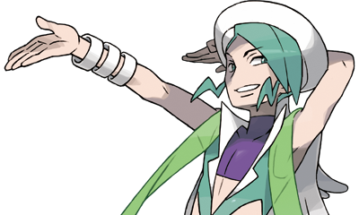Plubio |
Agua |
Arrecipolis |

Medalla Lluvia |
Alto Mando
Son los 4 mejores entrenadores de la región más el campeón, que en este caso es tu rival.
1° Miembro |
2° Miembro |
3° Miembro |
4° Miembro |
Campion |
Campion |
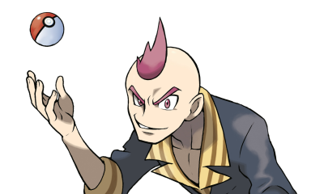Sixto |
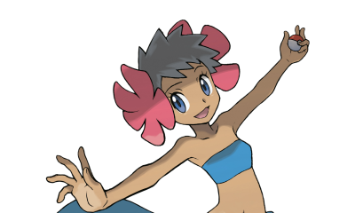Fátima |
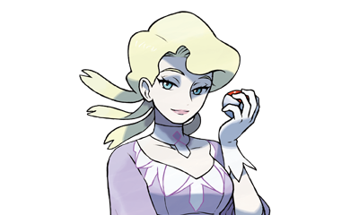Nívea |
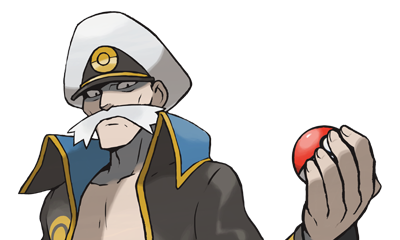Dracón |
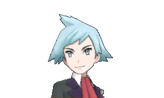Máximo |
.png)
Plubio |
Siniestro |
Fantasma |
Hielo |
Dragon |
Varios |
Agua |
Curiosidaes
- En los videojuegos Pokémon Rubí, Pokémon Zafiro y Pokémon Esmeralda se tiene un padre y una madre presente en el juego a diferencia de los otros videojuegos.
- En esta generación solo se añadieron 2 preevoluciones: Wynaut y Azurill.